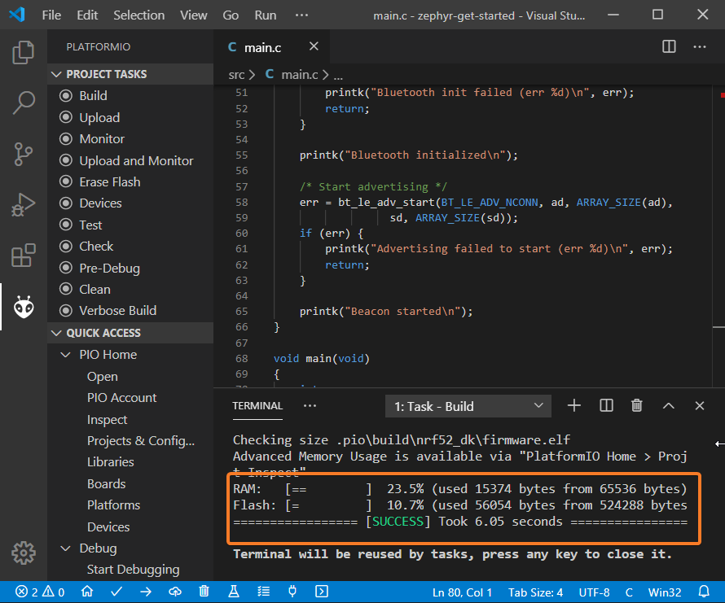
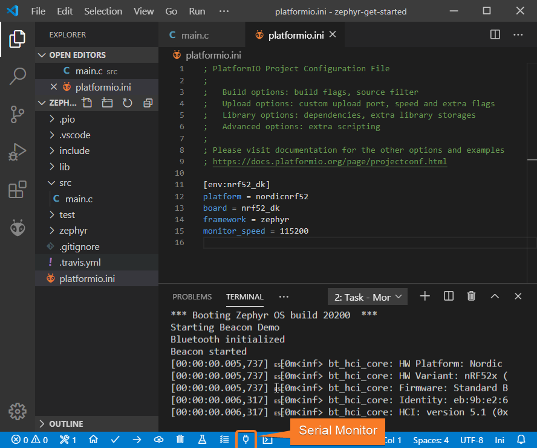
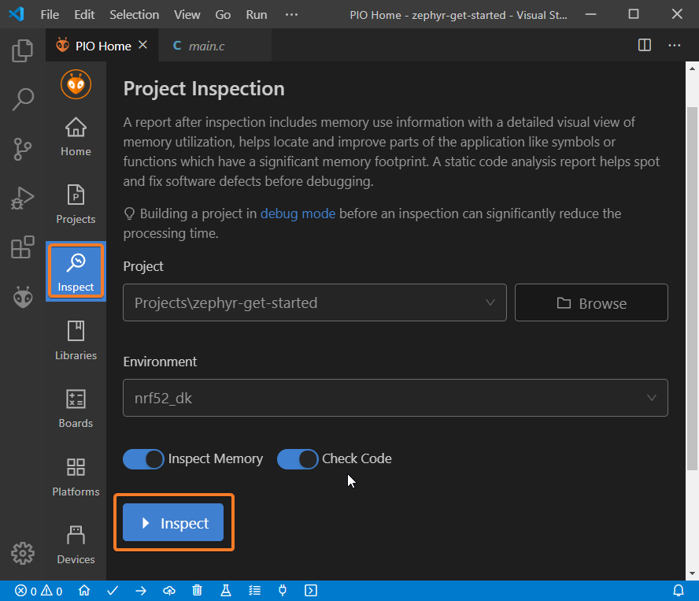

Zephyr and Nordic nRF52-DK: debugging, unit testing, project analysis¶
The goal of this tutorial is to demonstrate how simple it is to use VSCode
to develop, run and debug a simple Bluetooth project using Zephyr RTOS
framework for the Nordic nRF52-DK board.
Level: Intermediate
Platforms: Windows, Mac OS X, Linux
- Requirements:
Downloaded and installed VSCode
Install drivers for J-LINK debug tool
Nordic nRF52-DK development board
Contents
Setting Up the Project¶
Click on “PlatformIO Home” button on the bottom PlatformIO Toolbar:

Click on “New Project”, select
Nordic nRF52-DKas the development board, Zephyr RTOS as the framework and a path to the project location (or use the default one):
Adding Code to the Generated Project¶
Create a new file
main.cin src_dir folder and add the following code:// // Copyright (c) 2015-2016 Intel Corporation // // SPDX-License-Identifier: Apache-2.0 // #include <zephyr/types.h> #include <stddef.h> #include <sys/printk.h> #include <sys/util.h> #include <bluetooth/bluetooth.h> #include <bluetooth/hci.h> #define DEVICE_NAME CONFIG_BT_DEVICE_NAME #define DEVICE_NAME_LEN (sizeof(DEVICE_NAME) - 1) // Set Advertisement data. Based on the Eddystone specification: // https://github.com/google/eddystone/blob/master/protocol-specification.md // https://github.com/google/eddystone/tree/master/eddystone-url static const struct bt_data ad[] = { BT_DATA_BYTES(BT_DATA_FLAGS, BT_LE_AD_NO_BREDR), BT_DATA_BYTES(BT_DATA_UUID16_ALL, 0xaa, 0xfe), BT_DATA_BYTES(BT_DATA_SVC_DATA16, 0xaa, 0xfe, 0x10, // Eddystone-URL frame type 0x00, // Calibrated Tx power at 0m 0x00, // URL Scheme Prefix http://www. 'z', 'e', 'p', 'h', 'y', 'r', 'p', 'r', 'o', 'j', 'e', 'c', 't', 0x08) // .org }; // Set Scan Response data static const struct bt_data sd[] = { BT_DATA(BT_DATA_NAME_COMPLETE, DEVICE_NAME, DEVICE_NAME_LEN), }; static void bt_ready(int err) { if (err) { printk("Bluetooth init failed (err %d)\n", err); return; } printk("Bluetooth initialized\n"); // Start advertising err = bt_le_adv_start(BT_LE_ADV_NCONN, ad, ARRAY_SIZE(ad), sd, ARRAY_SIZE(sd)); if (err) { printk("Advertising failed to start (err %d)\n", err); return; } printk("Beacon started\n"); } void main(void) { int err; printk("Starting Beacon Demo\n"); // Initialize the Bluetooth Subsystem err = bt_enable(bt_ready); if (err) { printk("Bluetooth init failed (err %d)\n", err); } }
By default Bluetooth feature is disabled, we can enable it by creating a new file
prj.confinzephyrfolder and adding the following lines:CONFIG_BT=y CONFIG_BT_DEBUG_LOG=y CONFIG_BT_DEVICE_NAME="Test beacon"
Compiling and Uploading the Firmware¶
To compile the project use one of the following options:
Build option from the
Project TasksmenuBuild button in PlatformIO Toolbar
Task Menu
Tasks: Run Task... > PlatformIO: Buildor in PlatformIO ToolbarCommand Palette
View: Command Palette > PlatformIO: BuildHotkeys
cmd-alt-b / ctrl-alt-b:

If everything went well, we should see a successful result message in the terminal window:
To upload the firmware to the board we can use the following options:
Upload option from the
Project TasksmenuUpload button in PlatformIO Toolbar
Command Palette
View: Command Palette > PlatformIO: UploadTask Menu
Tasks: Run Task... > PlatformIO: UploadHotkeys
cmd-alt-u / ctrl-alt-u:

Connect the board to your computer and update the default monitor speed to
115200inplatformio.inifile:[env:hifive1-revb] platform = sifive board = hifive1-revb framework = zephyr monitor_speed = 115200
Open Serial Monitor to observe the output from the board:
If everything went well, the board should be visible as a beacon:

Debugging the Firmware¶
Since Nordic nRF52-DK includes an onboard debug probe we can use Debugging without any configuration.
To start a debug session we can use the following options:
Debug: Start debuggingfrom the top menuStart Debuggingoption from Quick Access menuHotkey button
F5:

We can walk through the code using control buttons, set breakpoints, add variables to
Watch window:
Writing Unit Tests¶
Note
Functions setUp and tearDown are used to initialize and finalize test
conditions. Implementations of these functions are not required for running tests
but if you need to initialize some variables before you run a test, you use the
setUp function and if you need to clean up variables you use tearDown
function.
For the sake of simplicity, let’s create a small library called calculator,
implement several basic functions add, sub, mul, div and test them using
Unit Testing engine.
PlatformIO uses a unit testing framework called
Unity.Unityis not compatible with C library implemented in the framework. Let’s enable standard version of newlib C library inprj.conffile using the following config:CONFIG_NEWLIB_LIBC=y
Create a new folder
calculatorin thelibfolder and add two new filescalculator.handcalculator.cwith the following contents:calculator.h:#ifndef _CALCULATOR_H_ #define _CALCULATOR_H_ #ifdef __cplusplus extern "C" { #endif int add (int a, int b); int sub (int a, int b); int mul (int a, int b); int div (int a, int b); #ifdef __cplusplus } #endif #endif // _CALCULATOR_H_
calculator.c:#include "calculator.h" int add(int a, int b) { return a + b; } int sub(int a, int b) { return a - b; } int mul(int a, int b) { return a * b; }
Create a new file
`test_calc.cto the foldertestand add basic tests forcalculatorlibrary:#include <calculator.h> #include <unity.h> void test_function_calculator_addition(void) { TEST_ASSERT_EQUAL(32, add(25, 7)); } void test_function_calculator_subtraction(void) { TEST_ASSERT_EQUAL(20, sub(23, 3)); } void test_function_calculator_multiplication(void) { TEST_ASSERT_EQUAL(50, mul(25, 2)); } void test_function_calculator_division(void) { TEST_ASSERT_EQUAL(32, div(100, 3)); } void main() { UNITY_BEGIN(); RUN_TEST(test_function_calculator_addition); RUN_TEST(test_function_calculator_subtraction); RUN_TEST(test_function_calculator_multiplication); RUN_TEST(test_function_calculator_division); UNITY_END(); }
Let’s run tests on the board and check the results. There should be a problem with
test_function_calculator_divisiontest:
Let’s fix the incorrect expected value, run tests again. After processing the results should be correct:

Project Inspection¶
For illustrative purposes, let’s imagine we need to find a function with the biggest memory footprint. Also, let’s introduce a bug to our project so Static Code Analysis can report it.
Open
PlatformIO Homeand navigate toInspectsection, select the current project and pressInspectbutton:Project statistics:

The biggest function:

Possible bugs:

Conclusion¶
Now we have a project template for Nordic Nordic nRF52-DK board that we can use as a boilerplate for the next projects.